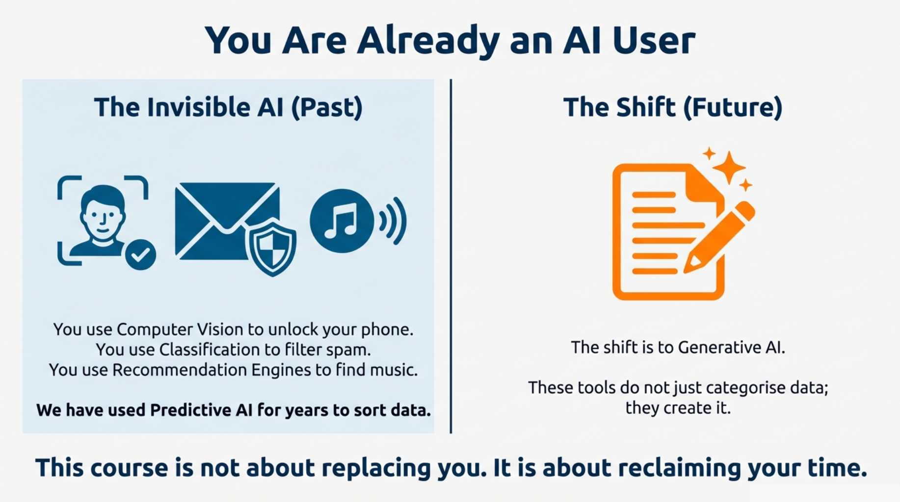

MODULE 1 · You Are Already an AI User
Module 1: You Already Use AI
Course Overview
This is a fully online, self-access course. It should take you around 60 minutes to complete, but if you need to pause and return, you can do so at any time. When you finish, you should be able to say these about yourself:
- I can distinguish between key AI terms and give examples relevant to my work.
- I can recognise tasks where AI may help and identify its specific limitations.
- I can apply my institution’s policies to spot risks and ensure ethical, safe AI use.
- I can decide whether a task is suitable for AI support using simple decision prompts.
- I can structure a basic prompt to improve the quality of AI responses.
Good luck, and hope you enjoy the course!
The WorkSmart-AI team.
You Already Use AI
We often talk about Artificial Intelligence as if it is a futuristic wave coming for our jobs. The reality? You have probably used AI three times before your first meeting of the day.
In your personal life:
- Did you unlock your phone with FaceID this morning? That's computer vision.
- Did Netflix suggest something you actually wanted to watch? That's a recommendation engine.
- Did your email finish a sentence for you? That's predictive text.
In your work:
- Has your VLE ever flagged a student as "at risk" before you noticed a problem? That's predictive analytics.
- Has Turnitin compared a submission against millions of papers? That's pattern matching.
- Has your inbox sorted messages into "Focused" and "Other"? That's classification AI.
For years, we have used Predictive AI to help us classify data (for example, "Is this email spam? Yes or No").
What has changed recently - and why we are here today - is the rise of Generative AI. These tools do not just categorise data; they create it. They can write emails, draft lesson plans, summarise messy meeting notes, and generate first drafts of reports in seconds.
But are they reliable? Let us find out.
The Question on Everyone's Mind
"Will AI take my job?"
Let us address this directly, because it's the elephant in the room.
The AI tools we are learning today are not autonomous agents that can replace human judgement, empathy, or institutional knowledge. They don't have that human compassion when comforting an anxious student. They cannot navigate the politics of a departmental meeting. They cannot tell whether a policy makes sense for your specific context.
What they can do is handle the repetitive, time-consuming parts of your work - drafting, summarising, reformatting, explaining - so you have more time for the work that actually requires a human being.
This course is not about replacing you. It is about reclaiming your time.
Now, with that settled, let us see how much you can trust these tools.

Activity: The "Human or AI?" Challenge
Read the following three passages, and for each say if you think they were written by a human, or by AI.
Passage 1: "Thank you so much for the invitation. While I appreciate the opportunity to discuss the project, I currently have a conflict in my schedule that prevents me from attending. Please let me know if there are minutes I can review later."
Passage 2: "The paper argues that constructivist alignment is contingent upon the interplay between learner autonomy and rigid assessment structures, suggesting a bifurcation of traditional modalities."
Passage 3: "According to the University's 2024 Assessment Regulation Section 4.2, students are granted a 48-hour automated grace period for all coursework if submitted via the digital portal."
Key Concepts
Just because an AI sounds confident does not mean it is correct. Generative AI is a prediction engine, not a truth engine. It predicts the next likely word in a sentence based on patterns from billions of web pages. Sometimes, to complete a pattern convincingly, it will invent facts, citations, policies, or statistics.
This is not a theoretical risk. In 2023, two New York lawyers submitted a court filing citing six cases - all invented by ChatGPT. The cases sounded real, with proper citations, but none existed. Both lawyers were sanctioned by the court. AI also regularly invents journal articles, complete with plausible author names, publication dates, and DOI numbers - none of which exist.
So Why Use AI?
If AI can lie so convincingly, why use it at all? Because when used correctly - for the right tasks, with proper verification - it is a remarkable time-saver.
Consider these everyday tasks:
Task | Without AI | With AI + Review |
|---|---|---|
Drafting a professional email decline | 5-10 minutes | 1-2 minutes |
Summarising a 20-page report | 45-60 minutes | 10-15 minutes |
Explaining a complex concept simply | 15-20 minutes | 3-5 minutes |
Generating 10 discussion questions | 20-30 minutes | 5-8 minutes |
The key is knowing when to use AI, how to use it safely, and what to check afterwards. That is exactly what this course will teach you.
What You'll Learn
In this course, we will move past the hype and focus on the practical skills you need to use AI tools safely and effectively. By the end of this course, you will be able to understand the technology (so you can predict when it will fail), spot the risks (hallucination, privacy, bias), make the call (using a simple decision checklist), and drive the tool (writing prompts that reduce errors and get useful results).
Flashcards: Key Terms Review
Key Terms Review